“EZINE - 4 in 1 Wordpress Theme Documentaion" by “imediapixel”
“EZINE v2”
Created: 11/07/2010
Last Updated: 03/15/2011
By: imediapixel
Email: imediapixel@gmail.com
Thank you for purchasing my theme. If you have any questions that are beyond the scope of this help file, please feel free to email via my user page contact form here. Thanks so much!
Table of Contents
- Installation and Setup
- General Options
- Homepage Setup
- Styling Options
- Creating your Post
- Portfolio Page
- Creating Testimonial Category
- Contact Page
- Using Wordpress 3.0 Menu Manager
- Widgets and Widget Places
- Using Shortcodes
- PSD
- Sources and Credits
A) Installation and Setup - top
After downloading EZINE theme package, please extract your download theme package and go to theme folder, unzip EZINE.zip folder and upload to wp-content/themes/ folder of your Wordpress site.
Now login to your Wordpress site and go to Appearance => Themes menu and activate EZINE theme.
If you want quick setup for your website, you can import our xml data sample that included in theme package that locate in sample data folder, here the step how to import sample data :
- Login to WP-admin
- Go to Tools => Import menu and choose Wordpress
- In upload field choose the xml sample data and upload it
- Now you need to configure EZINE theme options.
B) General Options - top
When click EZINE menu than you will be bring to EZINE theme options manager, and here the General Setting that you need to configure before your site ready to go.
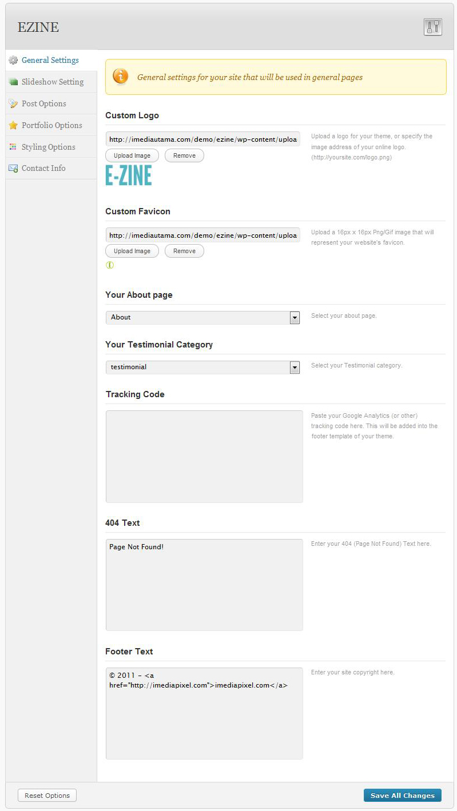
C) Homepage Setup - top
-
Creating Slideshow item
you need to create category for slidesho first, say you named it with featured category, then set category for slideshow from theme options => slideshow tab.
to add new slideshow item, go to Posts => Add New and you will bring to new post page :
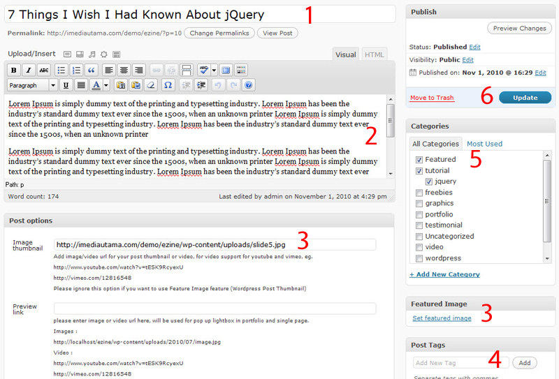
Here the explanation for above image :- Enter your title for the slideshow
- add some text for your slideshow description
- there are two options how to set your pos thumbnail,
- Using post option => Image thumbnail field
- Using Post Thumbnail (Feature image) feature, please follow below image for detail
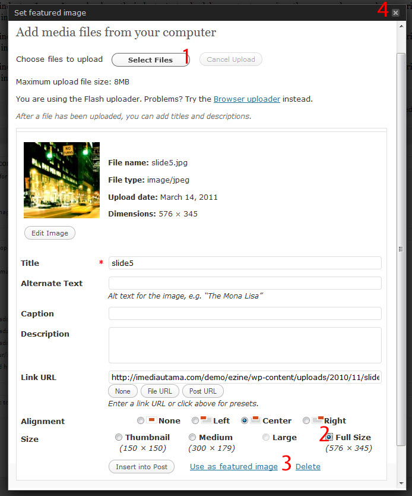
3.1 upload your image or use the existing from your media library
3.2 Set the image to full size
3.3 Click "Use as featured image" button
3.4 Close the popup lightbox. - Add your post tags
- Assign your post to featured category, it's just example, you can create your category for slideshow with your own name
- publish your slideshow!
-
Slideshow theme opions
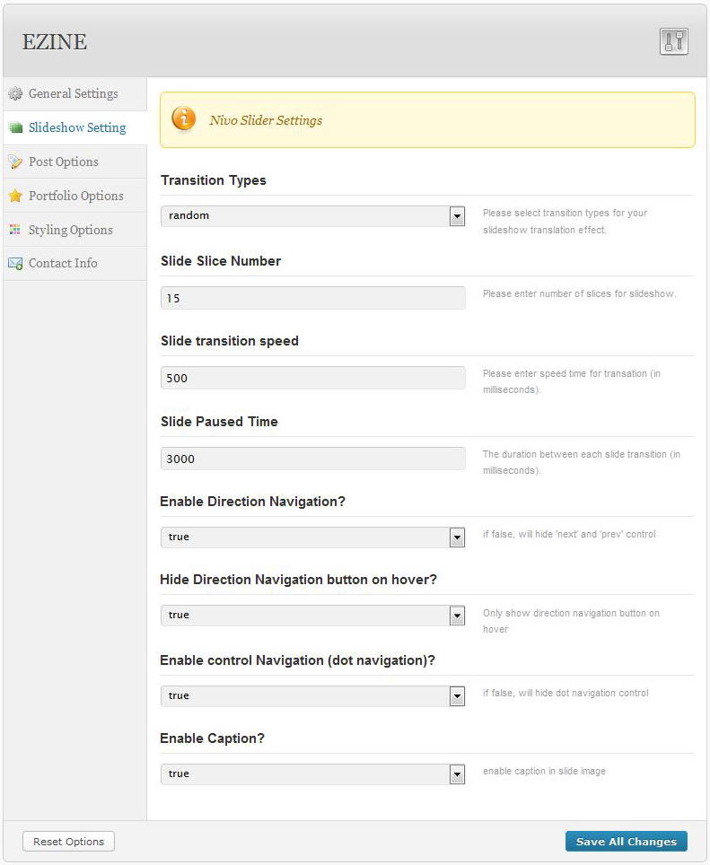
D) Styling Options- top
- 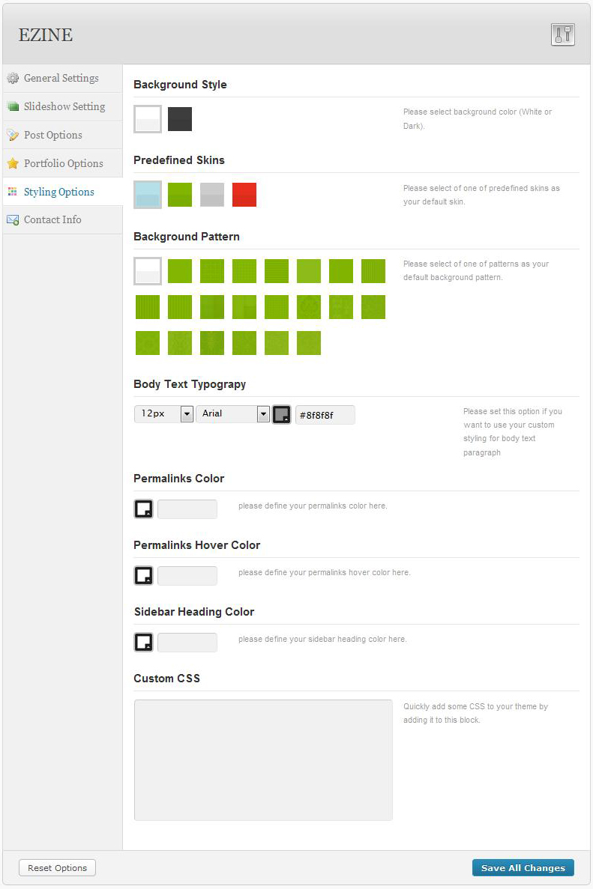
D) Creating your post- top
-
Creating your post item
To create new post, please go to Posts => New Post menu in admin panel, please follow below to create new post item
Here the explanation for above image :- Enter your title for your post
- add some text for your post content
- please enter the url of the image that will be used for post image thumbnail, you can upload your image from Media menu or use Feature Image (Post Thumbnail) feature, please refer to slideshow section how to add your Feature Image (Post thumbnail) feature.
- Assign your post to a category
- publish your post!
-
Creating Video post item
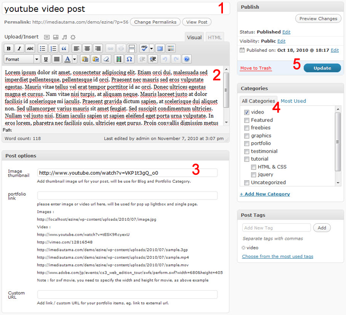
Here the explanation for above image :- Enter your title for your video post
- add some text for your video post content
- please enter the url of the video, for detail see below examples
- http://www.youtube.com/watch?v=tESK9RcyexU
- http://vimeo.com/12816548
- http://imediautama.com/demo/EZINE/wp-content/uploads/sample.3gp
- http://imediautama.com/demo/EZINE/wp-content/uploads/sample.mp4
- http://imediautama.com/demo/EZINE/wp-content/uploads/sample.mov
- http://www.adobe.com/jp/events/cs3_web_edition_tour/swfs/perform.swf?width=680&height=405 - Assign your post to a category
- publish your video post!
-
Post Options
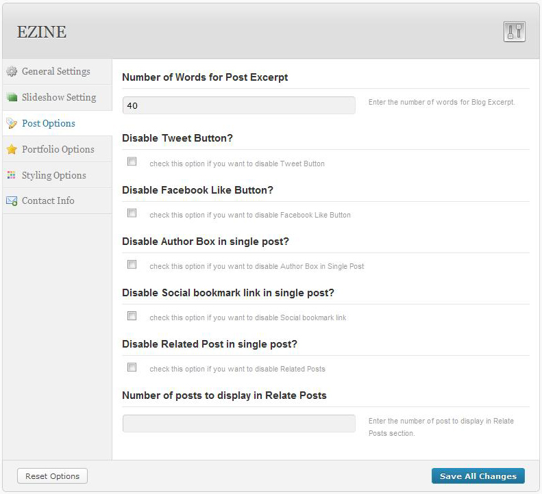
E) Portfolio page - top
-
Creating Portfolio Page
First you need to create Portfolio Page then assign to Portfolio Template.

Here the explanation for above image :- Enter your title for your page
- add some text for your page content
- change Page Attrinbutes => Template to Portfolio
- publish your page!
- Creating Portfolio Post Item
to add new Portfolio item, click Add New and you will bring to new post page, please follow below image :
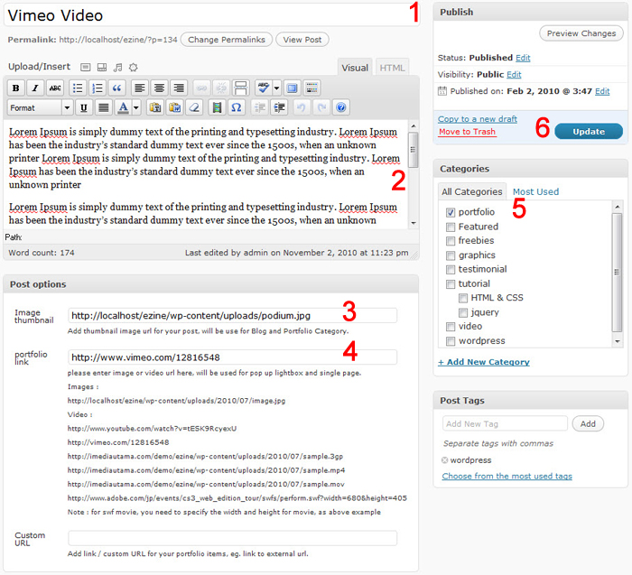
Here the explanation for above image :- Enter your title for the Portfolio post item
- Add some text for your post content
- Please enter the url of the image that will be used for portfolio thumbnail, you can upload your image from Media menu or use Feature Image (Post Thumbnail) feature, please refer to slideshow section how to add your Feature Image (Post thumbnail) feature.
- Add image or video url for pop up lightbox, for video you can use the embed source url, for detail see below examples
- http://localhost/EZINE/wp-content/uploads/image.jpg
- http://www.youtube.com/watch?v=tESK9RcyexU
- http://vimeo.com/12816548
- http://imediautama.com/demo/EZINE/wp-content/uploads/sample.3gp
- http://imediautama.com/demo/EZINE/wp-content/uploads/sample.mp4
- http://imediautama.com/demo/EZINE/wp-content/uploads/sample.mov
- http://www.adobe.com/jp/events/cs3_web_edition_tour/swfs/perform.swf?width=680&height=405
Note : for swf movie, you need to specify the width and height for movie, as above example - Assign your post to Portfolio category
- Save your post!
Setting Portfolio Page
There's also setting for Portfolio page in EZINE theme options => Portfolio Tabs

F) Creating Testmonial Category - top
-
Creating Testmonial Category
To create Testmonial Categoriy, go to Post => Categories submenu, now you can create category for testimonial there
-
Adding Testmonial Post Item
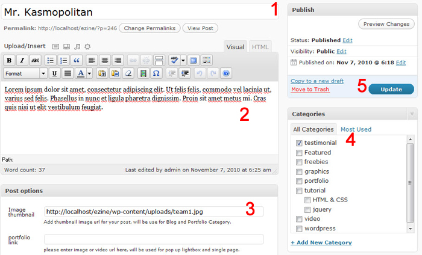
Here the explanation for above image :- Enter your title for the testimonial post item
- Add some text for your post content
- Add image url for your testimonial user profile or use Feature Image (Post Thumbnail) feature, please refer to slideshow section how to add your Feature Image (Post thumbnail) feature.
- Assign the post item to Testimonial Category
- Save your post!
G) Contact Page Setup - top
-
Creating Contact Page
To create Contact and Services pages please go to Pages => Add New menu, then assign page template to Contact Form
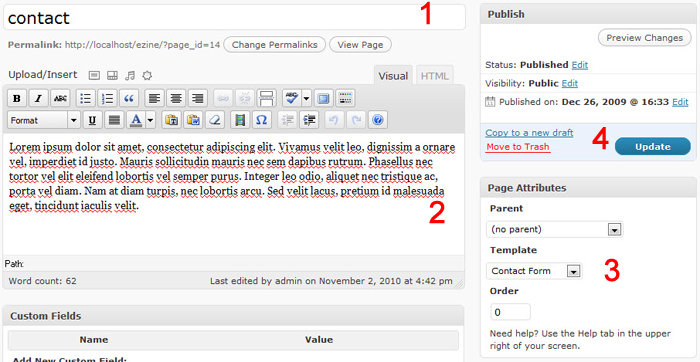
Here the explanation for above image :- Enter your title for your page
- add some text for your page content
- change Page Attrinbutes => Template toContact Form
- publish your page!
-
Contact Page Setting
To setup you Contact page and your detail information, please go to EZINE theme options => Contact Information Tab
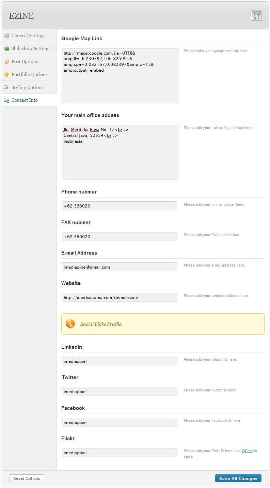
to add your google map, please go to map.google.com first, then point to your address, add the top right there's menu for embed source, you just need to copy the url of embed source in iframe.
H) Using Wordpress 3.0 Menu Manager - top
EZINE Theme support for new Wordpress Menu System, there's two built in menu place in EZINE Theme, for main navigation and footer, but you can still use the native menu if you dont want use this features, if you want to use this feature, please below step
I) Widgets and Widget Places - top
-
EZINE Widgets
There are Eight Custom widgets from EZINE theme, here the list of the custom widgets, all prefix with EZINE :
- ezine - Search Box
- ezine - Twitter Update
- ezine - Testimonial
- ezine - Social Profile
- ezine - Recent Posts
- ezine - Random Posts
- ezine - Post to Box
- ezine - Popular Posts
- ezine - Newsletter
- ezine - Flickr Gallery
Widget Places
There are alos eight widget place in EZINE theme, here the list of widget place in EZINE Theme :- General Sidebar, use for displaying the widgets in all pages
- Left Column Sidebar, use for displaying the widgets in left column sidebar
- Dynamic pages sidebar, automatically create sidebar widget when creating new page
- Single Post, use for displaying the widgets in Single page sidebar
- Bottom 1, widgets place for bottom column 1
- Bottom 2, widgets place for bottom column 2
- Bottom 3, widgets place for bottom column 3
- Bottom 4, widgets place for bottom column 4
J) Shortcodes - top
Shortcodes Detail
There are some shortcode function with istudio theme, and here the list of shortcodes from EZINE theme with description and how to use it, for more detail shortcodes please follow below image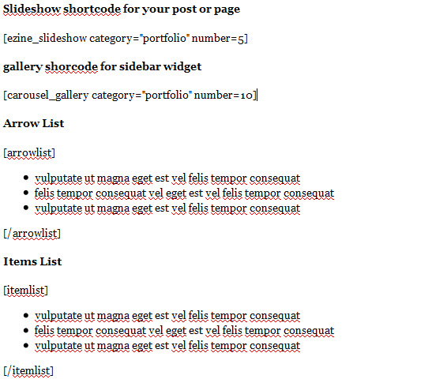
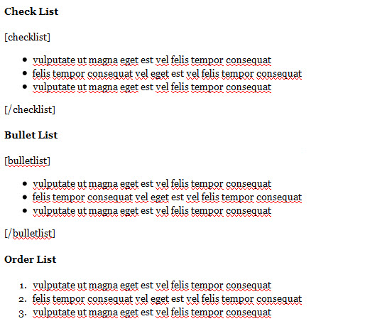
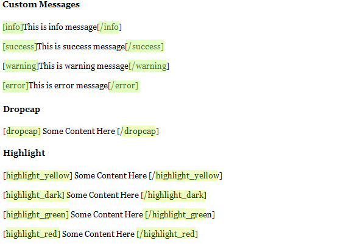
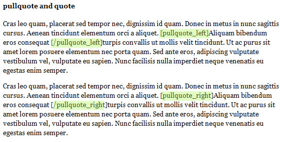
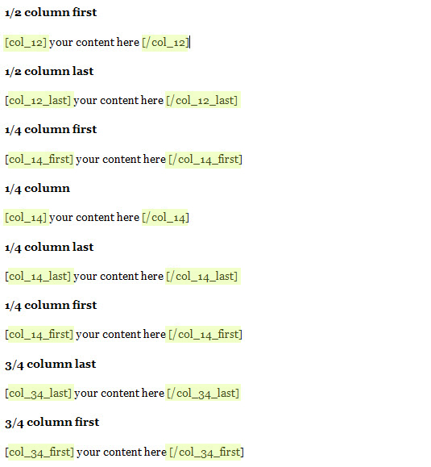
K) PSD Files - top
-
I've included six psds with this theme:
- EZINE-about.psd
- EZINE-contact.psd
- EZINE-homepage.psd
- EZINE-archives.psd
- EZINE-gallery.psd
- EZINE-portfolio.psd
L) Sources and Credits - top
I've used the following images, script, icons or other files as listed
- Slideshow images from Photos8.com
- Smiling images, http://www.sxc.hu/photo/184539
- jqueryslidemenu.js (Dropdown menu library, http://www.dynamicdrive.com/style/)
- http://nivo.dev7studios.com (for images slideshow ,http://nivo.dev7studios.com)
- http://www.no-margin-for-errors.com, http://www.no-margin-for-errors.com)
- Envato Asset Library, http://themeforest.net/page/asset_library
- Reflection Icon Set by Webdesigner Depot. http://www.webdesignerdepot.com
- webtoolkit icon set vol1, http://webtoolkit4.me/2008/09/05/webtoolkit4me-releases-the-first-icon-set/
Once again, thank you so much for purchasing this theme. As I said at the beginning, I'd be glad to help you if you have any questions relating to this theme. No guarantees, but I'll do my best to assist. If you have a more general question relating to the themes on ThemeForest, you might consider visiting the forums and asking your question in the "Item Discussion" section.
imediapixel